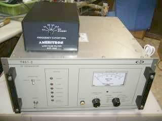
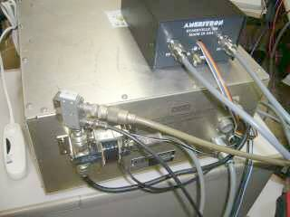
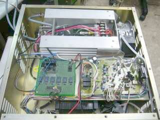
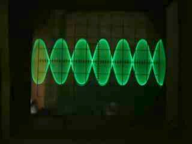

完成形 外付けＬＰＦとセットです |
縁あって入手していました
あのアンテナでおなじみのクリエートデザイン社製の高周波電源です
いつかは・・・と、数年手元に置いてありました
作りはとてもしっかりしています（電源内蔵で、５００Ｗ連続稼働仕様）
オリジナルのままで（１３．５６ＭＨｚの定数で、ドライバアンプの入力にＡＴＴで減衰させた）１４MHｚ帯の出力を入力して試験すると、そこそこの性能
・パワーゲイン
・リニアリティ
が得られることが分かりました
半導体リニア・アンプに手を付けるのは初めて
良い教材かと思い、オールバンド化（ICOMバンド情報で自動切替）を目標にスタートしました |
当初は、数Ｗ～１０Ｗクラスエキサイタのための簡易２００Ｗアンプにと思っていましたが、意外と実用になりそうと言うことで、少し本気になりました！？（できるところまで実験を進めようと思いました！）
ファイナルアンプは、２ＳＣ２６５２ ｘ２ このものを２組使っての合成です
アマチュア業界で言えば、八重洲 ＦＬ－７０００ アイコム ＩＣ－２ＫＬ リニア・アンプと同様の構成です
１３．５６ＭＨｚの水晶発振回路と、ドライバ回路がその前に入っています
ドライバ回路の入力では５ｍＷもあれば、フルパワーがでますが、リニアリティはイマイチ
エキサイタから最大２０Ｗ程度で、直接ファイナルアンプをドライブするようにしました
まずは、２８ＭＨｚ帯という元の設計より高い周波数での安定動作
そして、各バンドに必要なフィルタ（ＬＰＦ）を、切替を含めてどうするか・・・が、今回のテーマとなりました |
 |
ケース背面というか、外部とのやりとりはこんな感じ
このようなバラックでも、動作に問題はないようです
ＲＦ系の切替は、手持ちの同軸リレーを２個繋いで行いました（スルー回路は、変換コネクタでリレーどうしを直結！）
バンドフィルタ（ＬＰＦ）は、自作しようと思って「トロイダル・コア活用百科」も購入したのですが、手を抜いて？ＡＭＥＲＩＴＲＯＮの製品（ＡＲＦ－１０００）を入手し、ＲＦ回路の途中に入れました（本体横から、同軸ケーブルと、制御ケーブルを出し入れしています！）
左に見える「白いもの」は、モーターにも使える調光ユニットです |
コンバイナ（出力の合成）以降については、フィルタ部分を除きオリジナルのままです
元のπ型フィルタのところを外に取り出して、そこにＡＲＦ－１０００を接続しました
電源／制御部（保護回路など）もオリジナルのままです（ドライバーアンプは取り外しました）
元の状態では、出力フィルタは、π型１段と貧弱・・・そして、２１ＭＨｚ以上で、それ以下のバンド出力の半分程度しか得られませんでした（電流だけは流れる！）
ＲＦアンプ部の定数（Ｃ）については、ＦＬ－７０００等を参考に変更しました（全て計測して決めたわけではありません、この横着の結果が、そこそこＯＫでした）
ＡＤＦ－１０００は、１４ＭＨｚ以下については、何も問題はなかったのですが、２１ＭＨｚ／２８Ｍｈｚ帯についてはカットオフ周波数が低めにでて、パワーがロスすることが分かりましたので、Ｃのみ変更してカットオフ周波数を持ち上げました
リニアリティ（適正ドライブ）チェックは、ＴｗｏＴｏｎｅ信号の波形を見て決めます
空冷：オリジナルのままでは排気側でも「もの」が飛んでいくくらいの勢い、また送風音も大変大きい強力な仕組みでしたので、モーターにも使える調光ユニットを途中に入れて調整が利くようにしました（元々は連続仕様ですから、強制空冷が強力なのは当たり前かも） |
 |
緑色をした蛇の目基板が、今回のミソのひとつです
ＡＶＲを使って、ＩＣＯＭバンド情報（電圧情報）から対応するリレーを駆動し、さらにＡＲＦ－１０００のバンド切替リレーを駆動します
スタンバイは、同軸リレーを駆動するのみ（出力側はＡＣ１００Ｖ駆動、動作音が大きい！）
フロントにある、オペレーションスイッチにあるＬＥＤの点灯電圧を横取りして、無線機本体からのスタンバイ信号と組み合わせて（ＡＮＤで）使用しました
こうすることで、元々持っている保護回路が働くとＬＥＤが消灯、強制的に受信状態になります
ご覧のように、電源とＲＦ部が、体積を２分です（基板の下は電源部）
蛇の目基板の右は、オリジナルの水晶発振／制御基板です |
 |
ＴｗｏＴｏｎｅ波形／ダミーロード負荷
１４ＭＨｚ帯 フルパワー時（５００Ｗ：ドライブ２０Ｗ程度）
各バンド出力について大きく変わりませんが、やはり２８ＭＨｚ帯においては、ローバンドに比べ３０％位のパワーダウンが認められます（波形の頭がつぶれない範囲、流れる電流も減少）
各バンドで、最大パワーで使用することを求めるには、調整あるいは定数の変更などまだまだ改善点があるのかも知れませんが、当初の目的どおり軽く使うのであれば、これで十分そうに思われます |
３．５～２８ＭＨｚ帯において、バンド切替操作を要しないパワーアンプの完成です（１０ＭＨｚ帯を除く／７５６ＰＲＯⅢにその出力がない！ １．８ＭＨｚ帯もバンド切り替えだけはできますが、今度はアンプ能力が追いつかない！）
現状のままでは、ＣＷブレークインなどには同軸リレーがうるさくて不向きですが、ＳＳＢ運用なら実用になります
パワーゲインの違いなどで、各バンドごとにドライブパワーの調整は必要ですが（オーバードライブ防止のＡＬＣなど考慮していません）、そこはアマチュア無線で、日頃からこれらの操作は必須で何とも思っていませんので、ここはスルーです
入力インピーダンスマッチについては、無線機本体のアンテナチューナのお世話になることでクリアします |